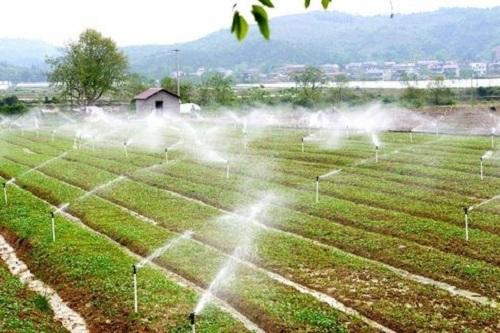

又有两项惠农政策公布了，惠及这几个省份！
中央财政安排8省（区、市）扶贫工作成效考核奖励资金32亿元
经党中央、国务院批准，2016年省级党委和政府扶贫开发工作成效考核中认定为完成年度计划、减贫成效显著、综合评价好的省份为（按行政区划排列）安徽、湖北、广西、重庆、四川、贵州、西藏、甘肃等8个省（区、市）。
《中共中央办公厅 国务院办公厅关于印发<省级党委和政府扶贫开发工作成效考核办法>的通知》要求，“对完成年度计划减贫成效显著的省份，给予一定奖励”。《国务院办公厅关于对2016年落实有关重大政策措施真抓实干成效明显地方予以表扬激励的通知》（国办发〔2017〕34号）明确，2017年对上述8个省（区、市）在分配中央财政专项扶贫资金时给予一定奖励。
为贯彻落实上述文件要求，近日，财政部、国务院扶贫办在分配2017年中央财政专项扶贫资金时专门安排32亿元，对上述8个省（区、市）给予奖励，每个省（区、市）各奖励4亿元。
200产粮大县将试点农业大灾保险
记者31日从财政部获悉，我国13个粮食主产省份的200个产粮大县将在今明两年开展农业大灾保险试点工作，以增强适度规模经营农户防范和应对大灾风险的能力。
此次试点涉及河北、内蒙古、辽宁、吉林、黑龙江、江苏、安徽、江西、山东、河南、湖北、湖南、四川等13个粮食主产省份。其中，粮食产量位居全国前三的黑龙江、河南、山东各选择20个试点县，其余省份各选择14个试点县，试点保险标的首先选择关系国计民生和粮食安全的水稻、小麦和玉米三大粮食作物。
据了解，试点工作主要围绕提高农业保险保额和赔付标准，开发面向适度规模经营农户的专属农业保险产品。对于适度规模经营农户的具体标准，由各省份根据中央有关精神，结合当地实际情况予以确定。原则上讲，适度规模经营农户的经营规模应为当地户均承包地面积的10至15倍左右。
财政部鼓励试点地区因地制宜，探索符合本地实际的具体保险模式，形成可推广、可复制的具体经验。各地实施方案应报财政部、农业部和保监会备案。